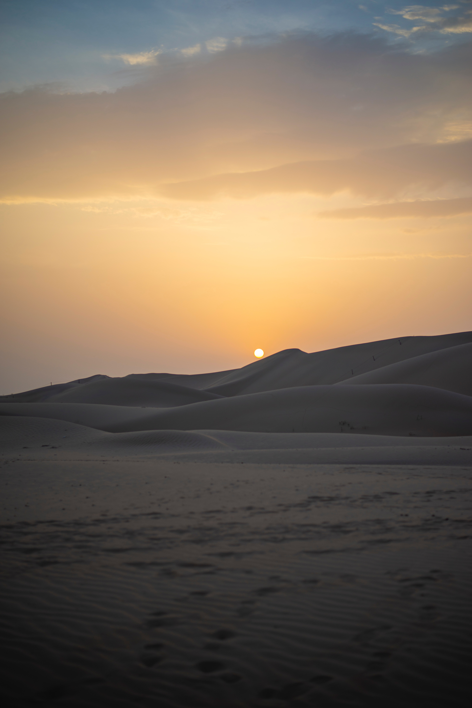
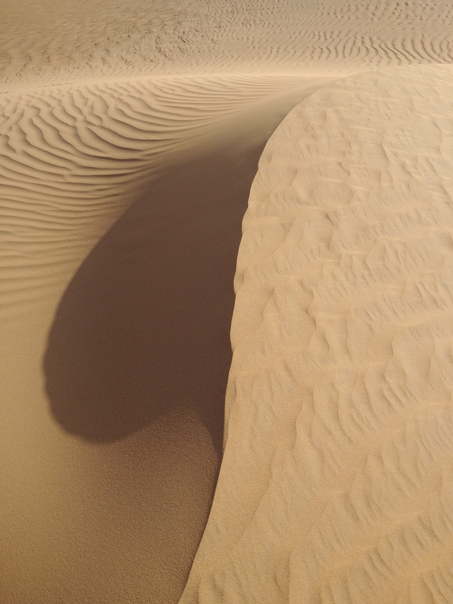
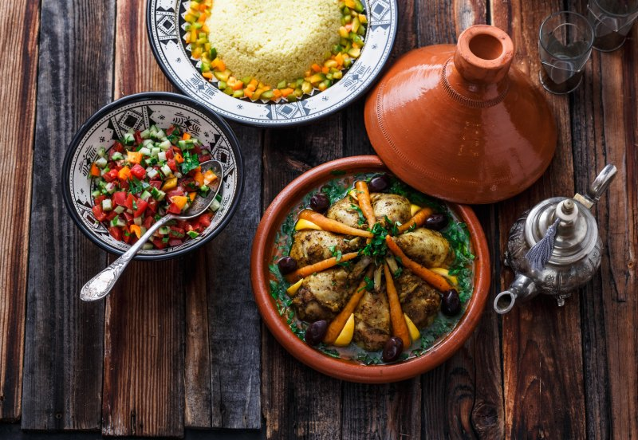
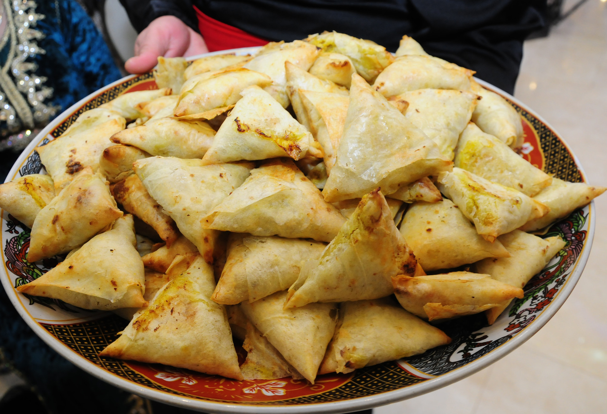

LES DUNES DE L'ERG CHEBBI
Description
Les dunes de l'Erg Chebbi à Merzouga sont incontestablement l'une des plus grandes attractions du Maroc. Plus connues sous le nom de dunes de Merzouga, elles sont l'un des deux ergs du Sahara en Maroc (l'autre est l'Erg Chigaga près de M'hamid). Les erg ce sont des groupes de grandes dunes formées par le sable emporté par le vent.
Erg Chebbi est situé près de la petite ville de Merzouga. Longue de 22 km et large d'environ 5 km, ses plus hautes dunes culminent à 150/200 mètres. Ces hautes dunes, de couleur jaune ou ocre, représentent un lieu incontournable pour les amateurs d'aventures uniques et sensationnelles.



Activités
Une visite au désert de l'Erg Chebbi est une expérience unique et passionnante. La plupart des visites débutent à Merzouga, une petite ville située près de l'Erg Chebbi. Les activités proposées lors d'une visite au désert de l'Erg Chebbi peuvent varier en fonction de l'itinéraire choisi,
mais peuvent inclure une balade à dos de chameau, une promenade en quad, une randonnée dans les dunes ou une nuit à la belle étoile. En résumé, une visite au désert de l'Erg Chebbi est une expérience passionnante qui offre une immersion dans la culture et les paysages uniques du Maroc.


Gastronomie
Merzouga est une ville située dans le désert du Sahara au Maroc, donc la gastronomie locale est principalement influencée par la culture berbère et les ingrédients disponibles dans le désert.
Les plats traditionnels de la région incluent le couscous, le tajine (un plat mijoté avec de la viande, des légumes et des épices), le méchoui (de l'agneau grillé à la broche) et la harira (une soupe épicée aux lentilles). Les dattes, les figues et les amandes sont également des ingrédients couramment utilisés dans les desserts locaux.
Cependant, la cuisine traditionnelle est une partie importante de la culture locale et mérite d'être goûtée pour une expérience culinaire authentique lors de la visite de Merzouga.



Historique
Merzouga est une région située dans le désert du Sahara au sud-est du Maroc, qui a une longue et riche histoire.
Au début du XXe siècle, la France a colonisé le Maroc et a introduit des technologies modernes, comme l'irrigation, pour améliorer l'agriculture. Merzouga est également devenue un point de passage pour les voyageurs qui se rendaient en Afrique subsaharienne.
Les Berbères locaux ont adapté leur mode de vie pour répondre aux besoins des visiteurs, offrant des visites guidées dans le désert, des promenades à dos de chameau, ainsi que des hébergements traditionnels tels que les tentes nomades et les maisons d'hôtes.